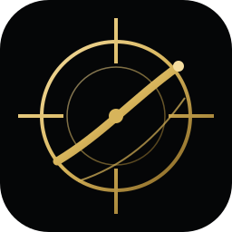
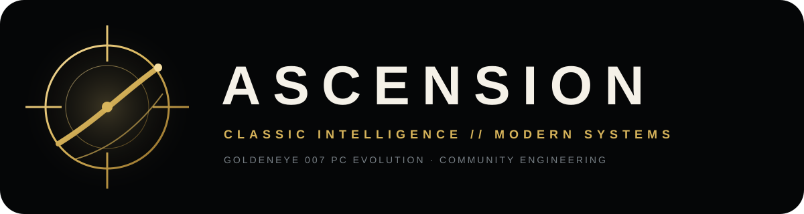

Fidelidade como base
Comportamento clássico permanece documentado e alterações modernas devem ser conscientes.

ASCENSIONAscension transforma uma base histórica de GoldenEye 007 em um projeto de PC com identidade própria: preservação primeiro, evolução moderna em camadas e engenharia aberta para a comunidade.


Uma identidade original inspirada no thriller de espionagem tecnológica dos anos 1990: vigilância, satélite, mira, metal escuro e ouro — sem reproduzir o logotipo oficial do filme.
O original é a referência. O Ascension acrescenta localização, controles, configuração, acessibilidade, apresentação e ferramentas sem fingir que roadmap é recurso entregue.
Comportamento clássico permanece documentado e alterações modernas devem ser conscientes.
Uma camada moderna pode crescer sem apagar a experiência histórica.
Implementado, compilado, testado automaticamente e testado jogando são estados diferentes.
Mídia real da base em execução, não uma tela conceitual apresentada como gameplay.


Arquitetura multilíngue e PT-BR são parte da direção do produto.
Mouse, teclado e controle evoluem sem destruir a referência clássica.
Renderização, áudio e sensação de controle precisam ser validados em jogo.
Documentação e commits pequenos tornam a engenharia auditável e reversível.
Build nativa e execução
PT-BR e localização
Presets, remapeamento e refinamento
Configuração, estabilidade, HUD e acessibilidade
Modding e ferramentas
Você fornece sua própria ROM legalmente obtida. O projeto não distribui conteúdo comercial.
$ git clone https://github.com/MukaSanches/goldeneye-pc-port.git
$ cd goldeneye-pc-port
$ ./build-pc.sh ntsc-final
$ ./build-pc/ge007.x86_64.exePreservar o clássico.
Elevar a experiência.
Abrir o conhecimento.